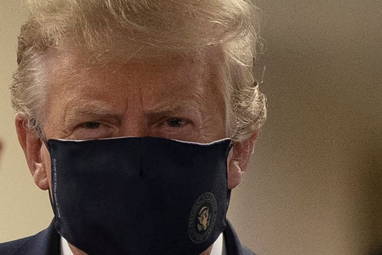

Kunjungi RS Militer, Trump Pakai Masker untuk Pertama Kalinya
BETHESDA, KOMPAS.com - Presiden Amerika Serikat ( AS) Donald Trump yang sebelumnya enggan memakai masker, pada Sabtu (11/7/2020) akhirnya mengenakannya untuk kali pertama. Ia memakainya saat mengunjungi sebuah rumah sakit militer di luar Negara Bagian Washington, tepatnya di Bethesda, Negara Bagian Maryland. Di sana, Trump hendak bertemu dengan tentara yang sedang menjalani perawatan karena terluka dan para perawat di garis depan.
Akibat dari banyaknya negara bagian yang dibuka lagi itulah, jumlah kasus virus corona di AS kembali menanjak. Pada Jumat (10/7/2020) AS mencatatkan lebih dari 69.000 kasus baru secara harian, yang menjadi jumlah tertinggi selama 3 hari beruntun. Total kasus secara nasional pun melonjak drastis, menjadi lebih dari 3,35 juta hingga Minggu (12/7/2020) siang WIB.
Andrew Bates juru bicara calon presiden AS dari Partai Demokrat Joe Biden mengatakan, selama berbulan-bulan Trump telah mengabaikan saran para ahli medis dan mempolitisasi penggunaan masker. “Daripada mengemban tanggung jawab dan memimpin, dia menghabiskan empat bulan ketika orang-orang Amerika berkorban sampai terjadi perselisihan dan aktif mengimbau orang lain untuk saling melindungi,” ucapnya dikutip dari Reuters Sabtu (11/7/2020).